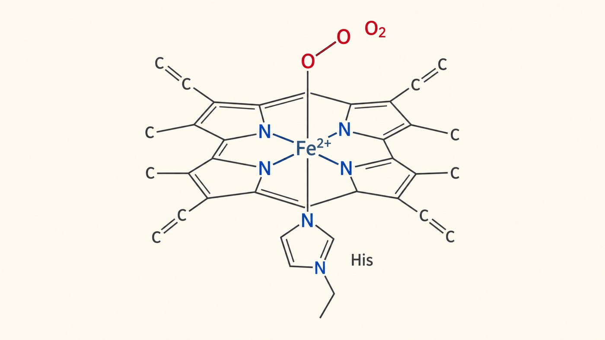
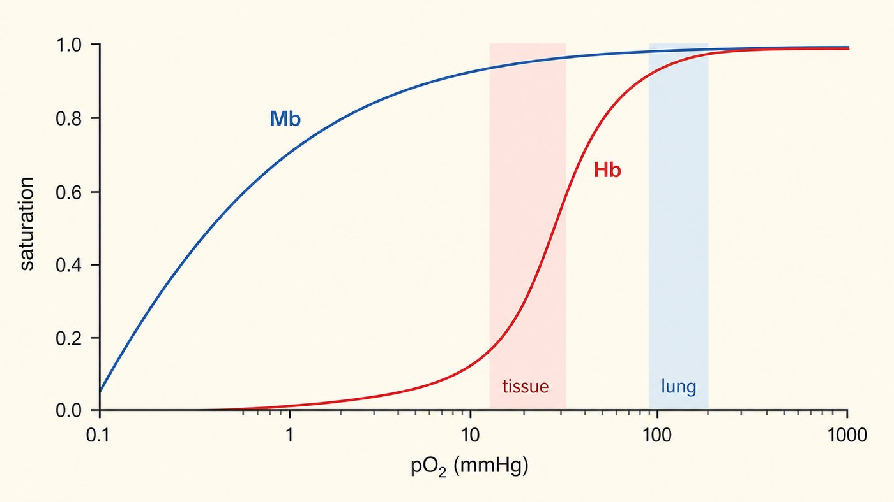

第 5 週
肌紅素與血紅素
Chức năng protein: myoglobin và hemoglobin
Nối tiếp tuần trước
只到三級結構。
在肌肉裡「存」氧。
Myoglobin — 1 chuỗi, bậc 3
有四級結構。
在血裡「運」氧。
Hemoglobin — 4 chuỗi, bậc 4
三級與四級結構(第 4 週)。
疏水效應讓分子聚集(第 2 週)。
Kiến thức cũ dùng hôm nay
上週說:一條鏈 = 三級。很多條鏈 = 四級。
今天這兩個各來一個。
同樣是抓氧。但因為鏈數不同。行為完全不一樣。
Từ vựng · 不用背,看過就好
| 中文 | Tiếng Việt | English | 中文 | Tiếng Việt | English |
|---|---|---|---|---|---|
| 配位基 | Phối tử (ligand) | Ligand | 協同性 | Tính hợp tác | Cooperativity |
| 結合位置 | Vị trí gắn | Binding site | 異位調節 | Điều hòa dị lập thể | Allosteric |
| 肌紅素 | Myoglobin | Myoglobin | 波耳效應 | Hiệu ứng Bohr | Bohr effect |
| 血紅素 | Hemoglobin | Hemoglobin | 解離常數 | Hằng số phân li | Kd |
| 血基質 | Nhóm heme | Heme | 鐮刀型貧血 | Hồng cầu hình liềm | Sickle cell |
| 氧合曲線 | Đường cong gắn O₂ | O₂ curve | 抗體 | Kháng thể | Antibody |
血基質 heme = 工具。血紅素 hemoglobin = 整個蛋白質。不要搞混。
Protein phải BẮT thứ gì đó
被抓住的東西。
氧氣、葡萄糖、藥物…
Phối tử — thứ bị bắt
抓它的地方。
Vị trí gắn — chỗ bắt
抓得多緊。
Kd 越小 = 抓越緊。
Kd nhỏ = bám chặt
Nhóm heme

蛋白質本身抓不住氧。它需要一個工具。
必須是 Fe²⁺。變成 Fe³⁺ 就抓不住氧了。
一個環 + 中間一個鐵(Fe²⁺)。O₂ 接在鐵上面。
Vì sao máu màu đỏ?
鐵不夠 → 血基質做不出來 → 血紅素做不出來 → 貧血。全世界最常見的營養問題。
Thiếu sắt → không tạo được heme → thiếu máu
Hình quan trọng nhất hôm nay

肌紅素:雙曲線。抓得很緊。 | 血紅素:S 型。
So sánh
| 肌紅素 Myoglobin | 血紅素 Hemoglobin | |
|---|---|---|
| 形狀 | 雙曲線 | S 型 |
| 抓氧 | 抓得很緊 | 低 pO₂ 放掉,高 pO₂ 抓住 |
| 工作 | 在肌肉裡「存」氧 | 在血裡「運」氧 |
| 鏈數 | 1 條 → 三級 | 4 條 → 四級 |
血紅素跟肌紅素不同。為什麼抓氧比較鬆?
Câu hỏi then chốt
在肺裡「抓起來」。
在組織裡「放下去」。
Bắt ở phổi. Nhả ở mô.
到了組織也不放。
氧氣就送不到了。
Bám chặt → không giao được oxygen.
Tính hợp tác
血紅素有四條鏈。它們會「互相通知」。
→
一個抓到,其他三個就變容易。像團隊合作。
Một cái bắt được → 3 cái kia dễ hơn. Như làm việc nhóm.
Hình chữ S = công tắc
抓了第一個,
其他三個馬上跟上。
→ 快速裝滿
Ở phổi: nạp đầy nhanh
放掉第一個,
其他三個也跟著放。
→ 快速卸貨
Ở mô: dỡ hàng nhanh
Hiệu ứng Bohr
剛好就是需要氧的地方。氧就送到了。
這是第 2 週的 pH 在這裡的用途。
Thiếu máu hồng cầu hình liềm
→
574 amino acid, sai MỘT
Bài tập: Nhìn hình
在圖上指出 Chỉ ra trên hình:
Bài tập: Đúng hay sai
肌紅素有四級結構。
血紅素抓氧比肌紅素緊。
血紅素有協同性。曲線變成 S 型。
胜肽鍵斷掉。所以有鐮刀型貧血。
想一想:如果血紅素抓氧很緊。跟肌紅素一樣,會怎樣?
下週 · Tuần sau
Enzyme (1): nguyên lý xúc tác
▶ 課前:看詞彙表第 6 週(15 個詞)
Xem trước 15 từ của tuần 6
▶ 課前:看 Manga Guide 第 4 章,只看圖
Xem Manga Guide chương 4 — chỉ xem hình
▶ 提示:今天的「抓配位基」→ 下週「抓受質」
Gợi ý: bắt phối tử → bắt cơ chất